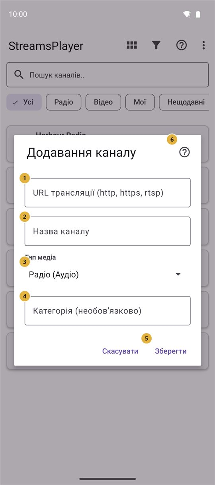
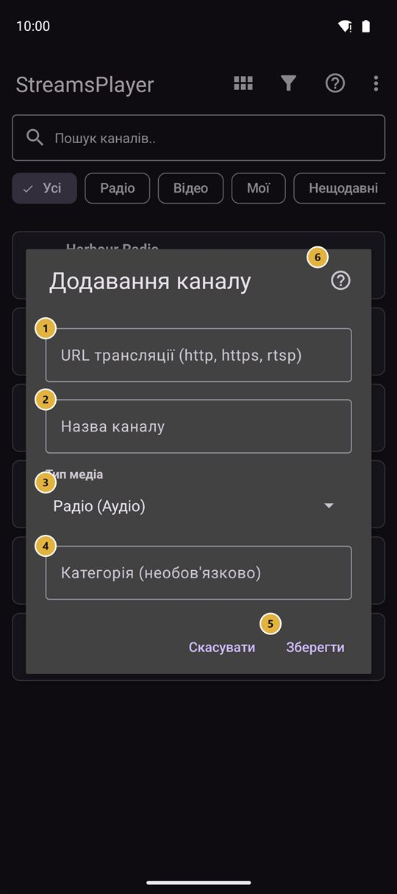

Додати канал
Для чого цей екран
Додайте до списку одну радіостанцію, відеопотік або камеру за адресою. Ця сама форма змінює канал, доданий раніше.


Порядок дій
- Введіть або вставте адресу 1. Вона починається з http, https або rtsp і містить ім'я сервера.
- Дайте каналу назву 2 або залиште поле порожнім: тоді назвою стане адреса.
- Вкажіть, який це потік 3, щоб він відкривався в потрібному програвачі.
- Додайте категорію 4, якщо хочете потім знаходити канал за нею.
- Натисніть «Зберегти» 5. Канал з'явиться в списку, а форма закриється.
Елементи
1URL трансляції (http, https, rtsp)Де розташований потік.
Адреса, що починається з http, https або rtsp. Якщо в ній немає імені сервера, форма скаже про це й лишиться відкритою. Адреса з логіном і паролем працює, але під час спроби поділитися таким каналом застосунок спершу попросить підтвердження.
- Скасування
- Поки ви не натиснули «Зберегти», нічого не зберігається.
2Назва каналуЯк канал називається у вашому списку.
Будь-який текст. Якщо залишити поле порожнім, назвою буде адреса. Пізніше назву можна змінити через «Редагувати».
3Тип медіаРадіо, відео або RTSP.
Радіо (аудіо) грає на панелі радіо й продовжує грати у фоні. Відео (HLS, DASH, MP4) і RTSP відкриваються в повноекранному програвачі. Вибирайте за тим, що несе потік, а не за тим, звідки він іде.
4Категорія (необов'язково)Необов'язкова позначка для вашого сортування.
Довільний текст. Категорія з'явиться серед категорій у «Фільтрі і сортуванні».
5ЗберегтиДодає канал або зберігає зміни.
Спершу перевіряє адресу. Якщо все гаразд, канал додається, а форма закривається.
- Скасування
- Видаліть канал в його аркуші дій або відредагуйте знову.
6ДовідкаВідкриває цю сторінку.
Форма лишається відкритою під сторінкою разом із тим, що ви ввели; «Назад» повертає до неї.
- Сполучення клавіш
- F1